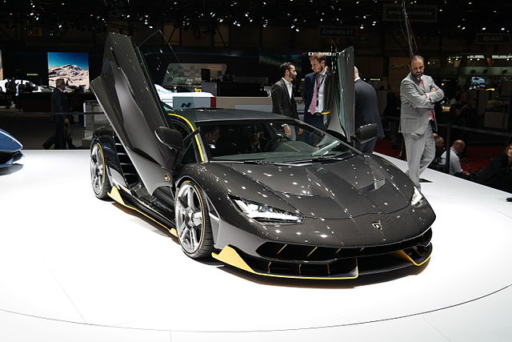

Mówi się, że powstanie samochodów Lamborghini wynikło z dyskusji pomiędzy miłośnikiem wozów sportowych Ferruccim Lamborghinim (1916–1993) a Enzo Ferrarim. Lamborghini, który wówczas z powodzeniem produkował wyłącznie traktory, był niezadowolony ze swego samochodu Ferrari i zaproponował Enzo Ferrariemu wprowadzenie zmian konstrukcyjnych. Ten oburzony uwagami „jakiegoś traktorzysty” zakwestionował kompetencje Lamborghiniego. Wobec tego Lamborghini postanowił udowodnić mu kto jest lepszy i już po roku zademonstrował swój legendarny 12-cylindrowy model Lamborghini 350 GTV, wyraźnie przewyższający samochody marki Ferrari. W 1964 roku powstało 350 GT. Bezpośrednim i prawie nieuniknionym odgałęzieniem 350 GT, zostało zbudowanych, był 400 GT. Jego silnik został powiększony do czterolitrowego modelu i zawierał pierwszą skrzynię biegów zaprojektowaną przez Lamborghini. Bazując początkowo na dwumiejscowym nadwoziu, które później przerobiono na 400 GT 2 + 2 z dwoma okazjonalnymi siedzeniami za dwoma zwykłymi, 400 GT osiągnęło ogólną produkcję 273 sztuk.
W 1966 pojawił się model Miura, dzięki któremu firma zyskała sławę na całym świecie. Mimo że samochód ten jest narowisty i trudny w prowadzeniu, to jego miłośnikom w niczym to nie przeszkadza.
W 1971 na salonie samochodowym w Genewie pokazano prototyp Countach, zaprojektowany przez Marcello Gandiniego z firmy Bertone. W 1974 rozpoczęła się seryjna produkcja. Ostro cięte, niskie nadwozie z unoszonymi do góry drzwiami i wlotami powietrza nadało mu niepowtarzalny charakter. Model ten, produkowany 15 lat pozwolił firmie i jej kolejnym właścicielom przetrwać ciężkie czasy.
Ferruccio Lamborghini sprzedał dział zajmujący się produkcją aut sportowych już w 1972. Kolejnymi właścicielami byli Georges-Henri Rossetti i René Leimer, następnie zarządzający firmą Patrick Mimran, który w 1987 sprzedał udziały firmie Chrysler, która sprzedała ją w 1994 indonezyjskiej firmie Megatech. W 1998 Automobili Lamborghini S.p.A po raz ostatni, jak do tej pory, zmieniło właściciela, którym zostało Audi AG.
Zespół po raz pierwszy zaprezentował się jako team meksykański pod nazwą GLAS na początku 1990 r., z byłym kierowcą teamów Alfa Romeo i Spirit – Mauro Baldim i kontraktem na silniki V12 od Lamborghini. Jednak meksykańscy inwestorzy zniknęli, a Lamborghini postanowiło uratować zespół. Siedziba została przeniesiona do Modeny we Włoszech i zespół dołączył do stawki na sezon 1991. Modena Team, po zastrzyku gotówki od Lamborghini, była całkowicie niezależna.
W połowie sezonu zespół był w poważnych kłopotach finansowych. Lamborghini odmówiło udostępnienia jakichkolwiek funduszy i choć zespół mógł przejść przedkwalifikacje, nie mógł dokonać żadnego postępu. Larini wziął udział w jeszcze czterech wyścigach: wypadając z GP Niemiec, dojeżdżając na 16-tej pozycji na Węgrzech oraz we Włoszech i zderzając się z Jeanem Alesi w Australii. Mimo tego zespół zniknął przed sezonem 1992.